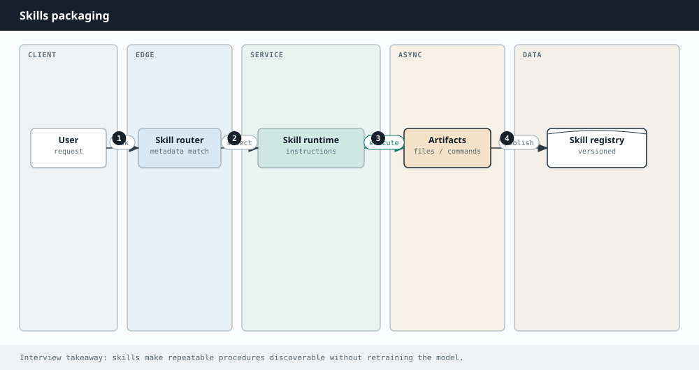

AI Engineering
Chapter 41
Skills
As agents take bigger jobs, stuffing every procedure into one mega-prompt collapses. Skills are the modular storytelling device: folders of instructions and helpers that the agent loads only when a task calls for them.

What a skill is
A skill is typically a directory with a SKILL.md (or equivalent) describing when to use it and how to do the job, plus optional scripts, templates, and examples. The catalog shows the agent a short name and description; the full text loads on match so the context window stays lean.
---
name: incident-writeup
description: Use when drafting a postmortem from timeline notes.
---
# Incident writeup
1. Extract timeline events with timestamps.
2. Separate impact, cause, and fix.
3. Output Markdown with sections: Summary, Impact, Timeline, Root cause, Actions.
Never invent timestamps. Ask if gaps exist.
Progressive disclosure
Always-loaded: name + description (cheap). On match: full SKILL.md. On demand: scripts and large references. That ladder keeps default prompts small while still giving depth when needed.
| Idea | What it packages | Loaded when |
|---|---|---|
| Prompt snippet | Static text | Always or manually |
| Tool | An action API | Model chooses to call |
| Skill | Procedure + resources | Task matches description |
| Fine-tune | Weights | Always (expensive to change) |
Authoring tips
- Write descriptions that mention trigger phrases and exclusions.
- Keep steps imperative and testable.
- Include one worked example and common failure modes.
- Version skills; breaking changes need migration notes.
Skills are how organizational know-how rides along with the agent without turning every request into a novel-length system prompt.
Lifecycle in an organization
Support leads draft a skill after a messy incident. Engineering reviews it for unsafe tool use. It ships behind a flag, gets eval cases (“refund within 30 days”, “refund after 30 days”), and is versioned. When policy changes, you edit the skill — not the model weights.
Matching quality
If descriptions overlap, the agent loads the wrong skill. Write exclusions (“Do not use for legal advice”). Optionally add an embedding match over skill descriptions with a confidence floor, then fall back to asking the user which procedure to follow.
Skills plus MCP
A skill can instruct the agent which MCP tools to prefer and how to interpret results. Skills are the playbook; MCP tools are the hands. Separating them keeps playbooks editable by domain experts without redeploying connectors.